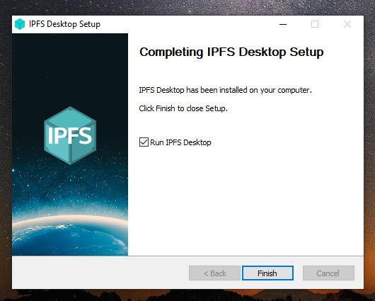
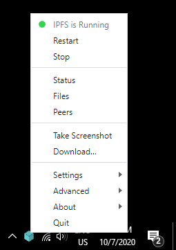
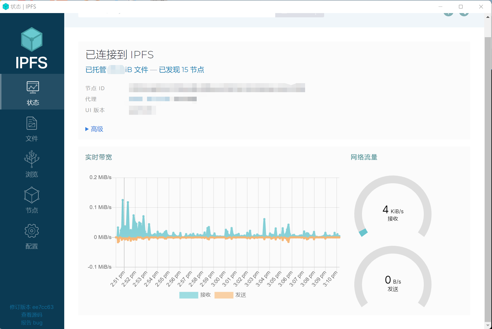

打开web 3.0的大门——IPFS使用
背景
有很多朋友问我什么是 web3.0，web3.0 似乎离我们非常远。有人会说 web3.0 是未来下一代的技术很有前景！但是举出一个具体的例子，似乎又非常困难。使用 web3.0 是一件非常高科技的事情。本文就是通过各 IPFS 给各位初学者和对 web3.0 感兴趣的人使用介绍，看完本篇文章，你就能进入 web3.0 的世界了~
IPFS
星际文件系统(InterPlanetary File System). IPFS 是一个分布式的 web, 点到点超媒体协议. 可以让我们的互联网速度更快, 更加安全, 并且更加开放. IPFS协议的目标是取代传统的互联网协议HTTP
下载安装
本文不会对技术做更深入探讨，只在应用层面上介绍
下载
安装
- 运行 .exe 文件开始安装，选择是要为您自己还是为计算机上的所有用户安装应用程序。点击下一步：

- 选择应用程序的安装位置。默认位置通常很好。点击下一步：

- 等待安装完成，然后单击完成：
 - 您现在可以在状态栏中找到 IPFS 图标：

使用
- 打开软件

可以
正常使用了！是不是很简单接下来浏览器直接查看 web3.0 站点
站点
我的 web3.0 blog： ipfs.jobcher.com
对标 youdTube 的视频网站: d.tube
Orbit，QQ 在 IPFS 上的替代者: orbit.chat
Akasha，对标 facebook，微信等社交工具：akasha.world